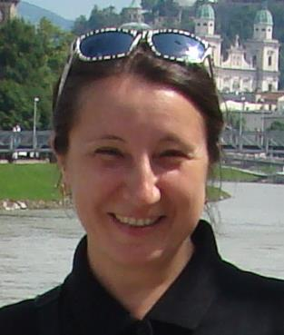

Tatiana R. ShmelevaDr.Sci., Professor
Web: https://scholar.google.com.ua/citations?user=uuSbZDkAAAAJ&hl=enE-mail: TatianaR.Shmeleva@gmail.com
ORCID ID: 0000-0002-4799-3842 Scopus Author ID: 35604380200 ResearcherID: R-2593-2016 Member of ACM, SIAM |
 |
Personal Information:
Date of birth June 1, 1968
Tatiana R. Shmeleva received an Eng. degree in applied mathematics from the Moscow Railroad Engineering Institute in 1990; a Ph.D. degree in telecommunications from the A.S. Popov Odessa National Academy of Telecommunications (ONAT), Ukraine, in 2008; an associate professor diploma of the Switching Systems department from the ONAT, Ukraine, in 2011; a Dr.Sci. degree in telecommunications from the ONAT, Odessa, Ukraine, in 2019; August 2020, Professor of Computer Science department ONAT (new name of ONAT is State University of Intelligent Technologies and Telecommunications). T.R. Shmeleva is the author of more than 80 papers and chapters published in journals, books, and conference proceedings. Her research interests are verification of protocols and performance evaluation of networks. She developed the analysis of infinite Petri nets with regular structure and reenterable colored Petri net models of networks. Since 2005, she has been with the A.S. Popov Odessa National Academy of Telecommunications. Tatiana is a member of ACM and SIAM.
December 2023 Max Planck Institute for Software Systems, Kaiserslautern and Saarbruecken, Germany, invited research professor
August 2022-2023 laboratory I3S CNRS, Université Côte d’Azur, Nice, France, invited professor
April-June 2022 National Technical University of Ukraine “Igor Sikorsky Kyiv Polytechnic Institute” (KPI), Department of Computer Science and Software Engineering, Dr.Sci.
August 2020-2022 Odessa National Academy of Telecommunications, Computer Science department, Professor
2019 Academic Council of A.S. Popov Odessa National Academy of Telecommunications, Dr.Sci., Telecommunication Systems and Networks, “Analysis, synthesis and transformations of
telecommunication systems models based on infinite Petri nets”, 05.12.2019.
October 2016-2018 Odessa National Academy of Telecommunications, doctorant
November 2011 Odessa National Academy of Telecommunications, diploma associate professor of Switching Systems department
September 2009 Odessa National Academy of Telecommunications, Switching systems department, associate professor
2005-2009 Odessa National Academy of Telecommunications, Department of Communication Networks, assistant professor
2008 Academic Council of ONAT, Ph.D, Telecommunication Systems and Networks, “Efficacy evaluation of switched Ethernet via parametrical Petri nets”, 17.10.2008.
2005-2008 post graduate course, A.S. Popov Odessa National Academy of Telecommunications (ONAT), Telecommunication Systems and Networks
2000-2005 Odessa railroad Information and Computing Center, 1st category programmer
1993-2000 Odessa Post Office, 1st category programmer
1990-1993 Research and development technical department of Railroad transport automated control system (PKTB ASU GT), Moscow, software engineer, system programmer, database administrator, 1st category programmer
1985-1990 Moscow Railroad Engineer Institute (MIIT), Applied Mathematics
2023, Certificate delivered by the MSCA4Ukraine project partners, Scholars at Risk Europe, hosted at Maynooth University, Ireland, the Alexander von Humboldt Foundation and the European University Association as the Consortium implementing MSCA4Ukraine, funded under the European Union’s Marie Skłodowska-Curie Actions. The application: Sleptsov Net Computing for Deep Learning by Université Côte d'Azur On behalf of Prof. Dr Tatiana Shmeleva following evaluation by independent, international experts was scored as a high-quality application in a very competitive evaluation process.
2022, April-June, “Analysis of Computing Grids and Cloud Security via Re-enterable Colored Petri Net Models” – mobility grant as part of the of the Joint Excellence in Science and Humanities (JESH ) program funded by the Austrian Academy of Sciences, Institute for Application-oriented Knowledge Processing (FAW), Johannes Kepler University (JKU) Linz, Austria
2021, May, Systems Research Institute of the Polish Academy of Sciences (SRI PAS), Warsaw, Poland, internship
2018, July, Department of Mathematics and Computer Science, Software Engineering & Technology, Eindhoven University of Technology (TU/e), Eindhoven, Netherlands, internship
2018, June, Industrial Informatics Department, Czech Institute of Informatics, Robotics and Cybernetics, Czech Technical University (CTU) in Prague, Czech Republic, internship
2013-2014 "Analysis of computational grids efficiency via Colored Petri Nets" – Austria-Ukraine cooperation grant
2008-2009 "Developing New Addressing Systems for World-Wide Networks (Е6)" – Ukraine state grant
2007-2008 "Verification of Complex Networking Protocols", grant NATO ICS.NUKR.CLG 982698
2007-2008 "Simulating Backbone MPLS Networks", Ukrtelekom grant
Science
Verification of protocols and Performance evaluation of networks. Petri Net Theory and Applications: analysis and synthesis of telecommunication networks and computing grids, computational process organization, production management and control.
Teaching work, supervising and mentoring activities
Lectures: Networking Technologies, Technology of Parallel and Distributed Programming, Modeling and Optimization of Systems and Networks, Algorithms and Complexity, Verification of Software, Mathematical Methods of Operations Research, Introduction to Artificial Intelligence, Programming in Python, Teletraffic Theory.
Supervised 32 master students, 23 Bc. students.
Software development
System programmer in development of automated control system for Railroad stations (PKTB ASU GT, Moscow). As database administrator and 1st category programmer took part in development of Dispatcher Control System for Central Asian and Kuybyshev Railroad – about 40 thousands lines of source code, (C, SQL). Took part in development about four software systems of middle-high complexity in Odessa Post Office – “Subscription”, “ARM for operator of postal telegraph office”, “Pension”, “Accounting department” (C, Pascal, Clipper).
Programming languages: C/C++, Python, Pascal, etc. DBMS: Oracle.
Telecommunications and networks administration
Network and telecommunication equipment administration. Platforms: Unix; MS Windows.
Reviewer of journals and books, organization of International conferences
Transactions of Odessa National Academy of Telecommunication
IGI-Global, USA, Encyclopedia of Information Science and Technology
PC member of: IEEE 39th International Conference, Kyiv, Ukraine, NTUU "Igor Sikorsky Kyiv Polytechnic Institute", 2019, IEEE 40th International Conference, Kyiv, Ukraine, NTUU "Igor Sikorsky Kyiv Polytechnic Institute", 2020, 2022.
Crucial Theoretical Results
Fundamentals of the Infinite Petri Nets theory
Analysis of Infinite Petri Nets with regular structure (linear, square, hypercube)
Formal methods of telecommunication protocols verification via the Infinite Petri nets
Methods of analysis, synthesis and transformation of telecommunication systems models by Reenterable Colored Petri nets
Crucial Scientific-Practical Results
Software systems: Automated control system for Railroad stations, Railroad Dispatcher Control System
Software programs: “Post Office: Subscription on journals and newspapers”, “ARM for operator of postal telegraph office”, “Post Office: Calculation of Pension”, “Accounting of Post Office”
Reenterable models of networks: Ethernet, IP, IP-RIP, MPLS, PBB
Reenterable models of rectangular grids with various node architectures
Models with regular structure (square, triangular, hexagonal, tree, hypercube and hypertorus) in Infinite Petri net form
My recent software and models are uploaded on https://github.com/tishtri. They include generators of big size models of multidimensional communication structures, virtual machines, in particular GPU implementation of virtual machine for Sleptsov net computing.
Invited presentations:
Shmeleva T.R. Keynote talk International Conference on Machine learning and Applied Network Technologies, ICMLANT 2023, December 14-15, Infinite Petri Nets for Cybersecurity of Intelligent Networks, Grid, and Clouds.
Shmeleva T.R. Keynote speaker "Performance evaluation of systems by reenterable colored Petri nets", International Multidisciplinary Research Conference on Sustainability,
Innovation and Internationalization, University of Perpetual Help System DALTA - Molino Campus, October 5-7, 2022.
Shmeleva T.R. A remote lecture on topic “Reenterable Colored Petri Net Models of Networks, Grids, and Clouds” to 6-Days Faculty Development Program on “IoT and Wearable Devices for Smart City Infrastructure”, which was supported by IEEE and SRM Institute of Science and Technology, Ghaziabad, India, June 22, 2022.
Shmeleva T.R. Reenterable Colored Petri Net Models of Networks, Grids, and Clouds, IBS PAN Seminar, Warsaw, Poland, May 11, 2021.
Shmeleva T.R. Software Generators of Petri Net Models. An invited talk to International Conference «Linux Vacation/Eastern Europe» (LVEE) 2019, Rakov, Minsk region, Belarus, August 22–25, 2019.
Shmeleva T.R. Modeling Networks with Infinite Petri Nets. Seminars at the Industrial Informatics Department, Czech Institute of Informatics, Robotics and Cybernetics, Czech Technical University (CTU) in Prague, Czech Republic, June 29, 2018 and Systems Research Institute of the Polish Academy of Sciences (SRI PAS), April 19, 2018.
Shmeleva T.R. Modeling Networks with Infinite Petri Nets. Provided a dedicated talk to colloquium at the Department of Mathematics and Computer Science, Software Engineering & Technology, Eindhoven University of Technology (TU/e), Netherland, July 5, 2018.
Shmeleva T.R. Reenterable Model of Communication Grid with Cut-through Nodes. A keynote talk to IEEE 4th International Scientific-Practical Conference, Problems of Infocommunications. Science and Technology» (PIC S&T) 2017, Kharkiv, Ukraine, October 10–13, 2017. IEEE, 2017. P. 223–227. DOI: 10.1109/INFOCOMMST.2017. 8246384. (SCOPUS)
Shmeleva T.R. Security of Grid Structures with Cut-through Switching Nodes. An invited talk to 8 the Workshop Program Semantics, Specification and verification: Theory and Applications (PSSV’2017), June 26, 2017, Moscow State University, Russia.
Website
https://scholar.google.com.ua/citations?user=uuSbZDkAAAAJ&hl=en
Basic and recent publications
Dmitry A. Zaitsev, Tatiana R. Shmeleva, Zeyu Zhou & Ding Liu, Verification of cryptocurrency consensus protocols: reenterable colored Petri net model design, International Journal of Parallel, Emergent and Distributed Systems, 2023, Published online: 24 Oct 2023.
Dmitry A. Zaitsev, Tatiana R. Shmeleva, Qing Zhang, and Hongfei Zhao, Virtual Machine and Integrated Developer Environment for Sleptsov Net Computing Parallel Processing Letters, Vol. 33, No. 03, 2350006 (2023).
Birgit Pröll, Werner Retschitzegger, Wieland Schwinger, Tatiana R. Shmeleva & Dmitry A. Zaitsev (2022): Modelling proof-of-work agreement protocol by coloured Petri nets, International Journal of Parallel, Emergent and Distributed Systems, DOI: 10.1080/17445760.2022.2113398
Tatiana R. Shmeleva, Jan W. Owsiński & Abdulmalik Ahmad Lawan (2021) Deep learning on Sleptsov nets, International Journal of Parallel, Emergent and Distributed Systems, Volume 36, 2021,Issue 6, 535-548, DOI: 10.1080/17445760.2021.1945055
Dmitry A. Zaitsev, Tatiana R. Shmeleva & Piotr Luszczek (2021) Aggregation of clans to speed-up solving linear systems on parallel architectures, International Journal of Parallel, Emergent and Distributed Systems, DOI: 10.1080/17445760.2021.2004412
D. Zaitsev, T. Shmeleva and D. E. Probert, "Two Kinds of Infinite Petri Nets for Modeling Computing and Communication Systems," 2021 IEEE 8th International Conference on Problems of Infocommunications, Science and Technology (PIC S&T), 2021, pp. 373-378.
Luong Thi Theu, Quang-Huy Tran, Vijender Kumar Solanki, Tatiana R. Shemeleva & Duc-Tan Tran (2021) Influence of the multi-resolution technique on tomographic reconstruction in ultrasound tomography, International Journal of Parallel, Emergent and Distributed Systems, 36:6, 579-593, DOI: 10.1080/17445760.2021.1967350
Shmeleva T.R., Inna V. Stetsenko. Modeling Unconditional Forwarding Decision within Switching Lattices. Current Trends in Communication and Information Technologies, Vol. 212, Lecture Notes in Networks and Systems, Springer, 2021, pp. 171-186, DOI https://doi.org/10.1007/978-3-030-76343-5_10 ISSN 2367-3370
Dmitry A. Zaitsev, Tatiana R. Shmeleva & Birgit Pröll (2021) Spatial specification of hypertorus interconnect by infinite and reenterable coloured Petri nets, International Journal of Parallel, Emergent and Distributed Systems, DOI: 10.1080/17445760.2021.1952580
Zaitsev D.A., Shmeleva T.R., Guliak R.N. (2021) Analyzing Multidimensional Communication Lattice with Combined Cut-Through and Store-and-Forward Switching Node. In: Kumar R., Mishra B.K., Pattnaik P.K. (eds) Next Generation of Internet of Things. Lecture Notes in Networks and Systems, vol 201, pp. 705-715. Springer, Singapore. https://doi.org/10.1007/978-981-16-0666-3_58
D. A. Zaitsev, T. R. Shmeleva and P. Ghaffari, "Modeling Multidimensional Communication Lattices with Moore Neighborhood by Infinite Petri Nets," 2021 International Conference on Information and Digital Technologies (IDT), 2021, pp. 171-181, doi: 10.1109/IDT52577.2021.9497552
Dmitry A. Zaitsev, Tatiana R. Shmeleva, Werner Retschitzegger, Spatial Specification of Grid Structures by Petri Nets, Lecture Notes in Networks and Systems: Proceedings of 4th ICMETE 2020, Micro-Electronics and Telecommunication Engineering, 2021, pp. 253-263.
Dmitry Zaitsev, Tatiana Shmeleva, and Alexander Kostikov, Clans Aggregation for Verification of Networking Protocols on Parallel Architectures, 2019 IEEE International Scientific-Practical Conference Problems of Infocommunications, Science and Technology (PIC S&T), Kyiv, Ukraine, 8-11 Oct. 2019. DOI: 10.1109/PICST47496.2019.9061392
Zaitsev D.A., Shmeleva T.R., Sleptsov A.I. Reenterable Colored Petri Net Models of Networks, Grids, and Clouds: Case Study for Provider Backbone Bridge. Telecommunications Forum (TELFOR) 2018: Proceedings of 26th Telecommunications Forum, Belgrade, Serbia, November 20-21, 2018. P. 76-83. DOI: 10.1109/TELFOR.2018.8611840. (SCOPUS)
Tatiana R. Shmeleva. Transformations of models of 2-dimensional grids Colored Petri nets into infinite Petri nets and vise versa. 2018 International Conference on Information and Telecommunication Technologies and Radio Electronics (UkrMiCo), Odessa, Ukraine, 10-14 Sept. 2018. DOI: 10.1109/UkrMiCo43733.2018.9047513
Shmeleva T. Analysis of a Hypertorus Grid. Electronics and Nanotechnology ELNANO-2018: Proceedings of IEEE 38th International Conference, Kyiv, Ukraine, April 24–26, 2018. NTUU "Igor Sikorsky Kyiv Polytechnic Institute", 2018. P. 56-59. DOI: 10.1109/ELNANO.2018.8477554. (SCOPUS)
Shmeleva T.R. Security of Grid Structures with Cut-through Switching Nodes. System Informatics, No. 10, 2017, p. 23-32. http://www.system-informatics.ru/en/article/135
Shmeleva T.R. Reenterable Model of Communication Grid with Cut-through Nodes. Problems of Infocommunications. Science and Technology» (PIC S&T) 2017: Transactions of IEEE 4th International Scientific-Practical Conference, Kharkiv, Ukraine, October 10–13, 2017. IEEE, 2017. P. 223–227. DOI: 10.1109/INFOCOMMST.2017. 8246384. (SCOPUS)
Shmeleva T.R. Measuring Subnets of Colored Petri Net Models. Information and Telecommunication Technologies and Radio Electronics, (UkrMiCo) 2017: Transactions of IEEE Second International Conference, Odessa, Ukraine, September 11–15, 2017. IEEE, 2017. P. 459-463. DOI: 10.1109/UkrMiCo.2017.8095417. (SCOPUS)
Shmeleva T.R. Automated Composition of Petri Net Models for Cellular Structures. Transactions of IEEE First Ukraine Conference on Electrical and Computer Engineering, UKRCON 2017, May 29 – June 2, Kyiv, Ukraine, pp.1019-1024. DOI: 10.1109/UKRCON.2017.8100405
Shmeleva T.R. Efficiency estimation of computing grids with various traffic types. Proceedings of the O.S. Popov ONAT. 2017. № 2. P. 89-95. https://biblio.onat.edu.ua/bitstream/handle/123456789/1464/Шмелева.pdf. (ISSN 2518-7139)
Shmeleva T.R. Reenterable model of RIP protocol in colored Petri nets form. Radio Electronics, Computer Science, Control. № 4 (39), 2016. p. 97-103. DOI: http://dx.doi.org/10.15588/1607-3274-2016-4-12, http://ric.zntu.edu.ua/article/view/90652 (WoS, in Russian)
Zaitsev D.A., Zaitsev I.D., Shmeleva T.R. Infinite Petri Nets as Models of Grids (pp. 187-204). Chapter 19 in Mehdi Khosrow-Pour (Ed.) Encyclopedia of Information Science and Technology, Third Edition (10 Volumes). IGI-Global: USA, 2014.
Zaitsev D.A., Shmeleva T.R., Retschitzegger W. and Proll B. Blocking Communication Grid via Ill-Intentioned Traffic, 14th Middle Eastern Simulation & Modelling Multiconference, February 3-5, 2014, Muscat, Oman, pp.63-71.
Zaitsev D.A., Shmeleva T.R. Verification of hypercube communication structures via parametric Petri nets, Cybernetics and Systems Analysis, Volume 46, Number 1 (2010), 105-114, DOI: 10.1007/s10559-010-9189-y
Vorobiyenko P.P., Guliaiev K.D., Zaitsev D.A., Shmeleva T.R. PBB Efficiency Evaluation via Colored Petri Net Models, Communications and Network, 2010, 2, 113-124. DOI: 10.4236/cn.2010.22018
Shmeleva T.R. Parametric Model of IP-Network in the Form of Colored Petri Net // Proceedings of 25th UK Performance Engineering Workshop (UKPEW 2009), 6-7 July, 2009. – Leeds (Great Britain), 2009. – p. 29-38.
Basic publications in verification of protocols
Zaitsev D.A., Shmeleva T.R., Groote J.F. Verification of Hypertorus Communication Grids by Infinite Petri Nets and Process Algebra. IEEE/CAA Journal of Automatica Sinica. 2019. Vol. 6, № 3. P. 733-742. DOI: 10.1109/JAS.2019.1911486. (SCOPUS, ISSN 2329-9266)
Shmeleva T. R., Comparative Analysis of Stability to Induced Deadlocks for Computing Grids with Various Node Architectures, Modeling and Analysis of Information Systems, 25:2 (2018), 193–206. DOI: 10.18255/1818-1015-2018-2-193-206
Zaitsev D.A., Zaitsev I.D., Shmeleva T.R. Infinite Petri Nets: Part 2, Modeling Triangular, Hexagonal, Hypercube and Hypertorus Structures. Complex Systems. 2017. Vol. 26, № 4. P. 341-371. DOI: 10.25088/ComplexSystems.26.4.341. (SCOPUS, ISSN 0891-2513)
Dmitry A. Zaitsev, Ivan D. Zaitsev and Tatiana R. Shmeleva. Infinite Petri Nets: Part 1, Modeling Square Grid Structures, Complex Systems, 26(2), 2017, 157-195. DOI: 10.25088/ComplexSystems.26.2.157
D. A. Zaitsev , T. R. Shmeleva, W. Retschitzegger, B. Pröll Security of grid structures under disguised traffic attacks, Cluster Computing, 19(3) 2016, 1183–1200. Online 17 June 2016. DOI: 10.1007/s10586-016-0582-9